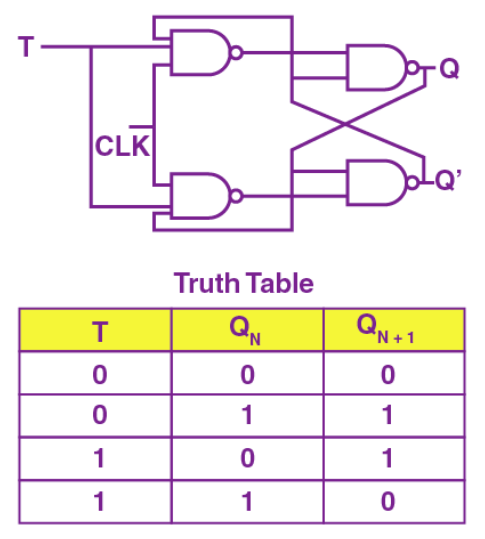

The T flip flop also known as the toggle flip-flop is another type of flip-flop. The T flip-flop accepts input and once the clock signal is a 1, it will toggle to the other output signal. If it was 0 before, it will become 1 and vice versa.
T flip-flops can be used in conjunction with other flip-flops to create more complex circuitry, but the T flip-flop on its own can be used for things like frequency division and pulse generation.
Characteristic tables and NAND gate representation of a T flip-flop
Obtained from: https://byjus.com/gate/flip-flop-types-conversion-and-applications-notes/